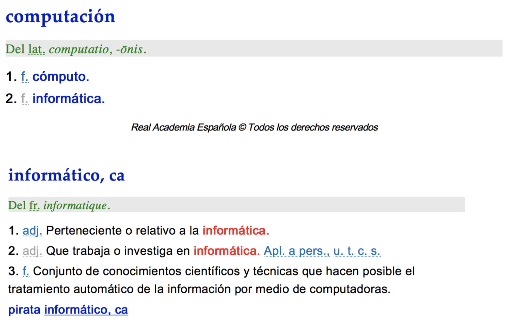

En primer lugar, es importante diferenciar los términos "informática" y "computación".
Según la REA:

Según la Wikipedia:
"La informática, también llamada computación en América, es una ciencia que estudia métodos, técnicas, procesos, con el fin de almacenar, procesar y transmitir información y datos en formato digital.”
Observe el siguiente REA, audiovisual en el cual se aclara la definición de informática: